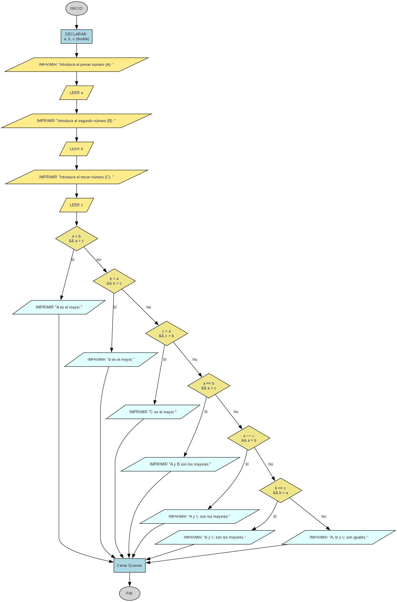

¿Cuál es el mayor de tres?
Escribe un programa que pida tres números decimales (A, B y C) e imprima en pantalla cuál es el mayor o si hay números iguales que sean los mayores.

Requisitos
- Pide al usuario cada uno de los tres números (A, B y C).
- Usa la clase
Scannerpara leer los tres números de tipodouble. - Compara los números para encontrar el mayor o los mayores.
- Imprime el resultado usando los mensajes exactos que se ven en los ejemplos.
Ejemplo de uso esperado
Introduce el primer número (A): 10
Introduce el segundo número (B): 5
Introduce el tercer número (C): 0
A es el mayor.
Introduce el primer número (A): 10
Introduce el segundo número (B): 5
Introduce el tercer número (C): 10
A y C son los mayores.
Introduce el primer número (A): 10
Introduce el segundo número (B): 10
Introduce el tercer número (C): 10
A, B y C son iguales.